Mas de CSS

Las hojas de estilos aparecieron poco después que el lenguaje de etiquetas SGML, alrededor del año 1970. Desde la creación de SGML, se observó la necesidad de definir un mecanismo que permitiera aplicar de forma consistente diferentes estilos a los documentos electrónicos. El gran impulso de los lenguajes de hojas de estilos se produjo con el boom de Internet y el crecimiento exponencial del lenguaje HTML para la creación de documentos electrónicos. La guerra de navegadores y la falta de un estándar para la definición de los estilos dificultaban la creación de documentos con la misma apariencia en diferentes navegadores. El organismo W3C (World Wide Web Consortium), encargado de crear todos los estándares relacionados con la web, propuso la creación de un lenguaje de hojas de estilos específico para el lenguaje HTML y se presentaron nueve propuestas. Las dos propuestas que se tuvieron en cuenta fueron la CHSS (Cascading HTML Style Sheets) y la SSP (Stream-based Style Sheet Proposal).
CSS funciona mediante reglas que especifican exactamente el estilo de uno o varios elementos en una página. Una regla posee tres elementos básicos que se expresan de la siguiente forma en el código:
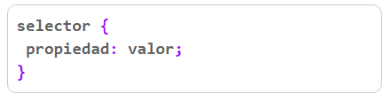
CSS funciona mediante reglas que especifican exactamente el estilo de uno o varios elementos en una página. Una regla posee tres elementos básicos que se expresan de la siguiente forma en el código:
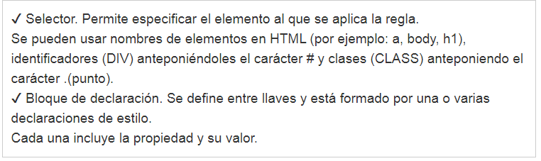La propiedad y el valor tienen que estar separados por dos puntos y la declaración termina con un punto y coma. Cualquier equivocación al usar estos signos de puntuación, provoca que la regla no funcione correctamente. Algunos ejemplos simples: – La siguiente regla especifica que todos los enlaces en la página deben tener el color rojo.
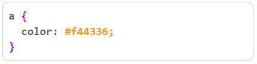
– La siguiente regla especifica que el elemento que posee la identidad "big" debe usar un tamaño de fuente de 22 pixeles.
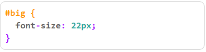
– La siguiente regla especifica que todos los elementos con la clase "neg", su texto debe de usar negritas.
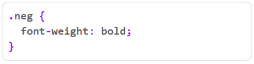
En una misma regla se puede usar varios selectores al mismo tiempo, separándolos con una coma. ambién se pueden especificar varias propiedades con sus valores en una misma declaración. Por ejemplo:
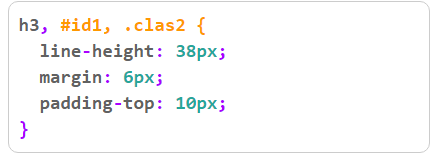
En la siguiente imagen se puede datallar como esta estructurada una regla en CSS.
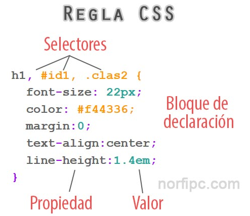
Los valores a emplear dependen de las propiedades. En los ejemplos anteriores hemos usado para "color" valores hexadecimales (recomendados), pero también se pueden emplear sus nombres en HTML, por ejemplo: rojo = ff0000 o de forma abreviada f00. En las propiedades con valores de tamaño usamos pixeles (px), pero también se puede definir usado emes (em), puntos (pt) o porcientos (%).
Se puede aplicar CSS para formatear cualquier documento HTML, de tres formas:
1- Inline. Insertando las reglas directamente en los elementos usando la propiedad STYLE. Por ejemplo:
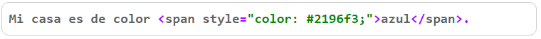
NOTA: Esta técnica no es recomendada en la web moderna.
2- Una hoja de estilo interna, incluyendo las reglas dentro de un script, situado en el área del HEAD de la página, de la siguiente forma:
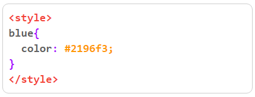
3- Una hoja de estilo externa, enlazada a la página. Las reglas de almacenan en un archivo de texto con la extensión CSS, de la siguiente forma:
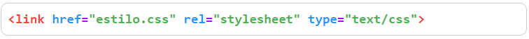
En las páginas de este sitio usamos un bloque de aclaración, al que le asignamos la clase "blue" Se emplea en el estilo CSS la siguiente regla para definir su estilo:
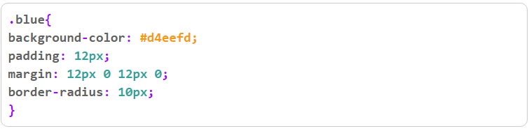